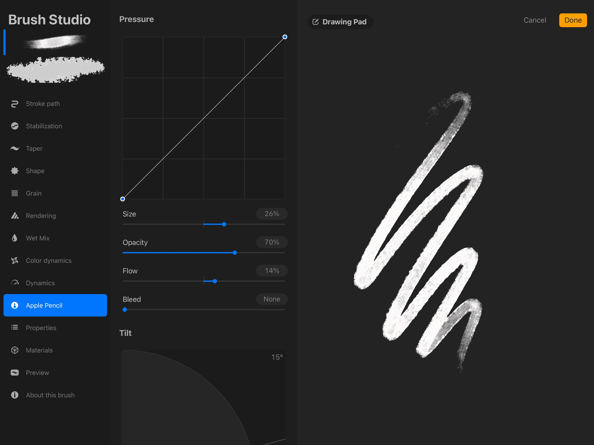
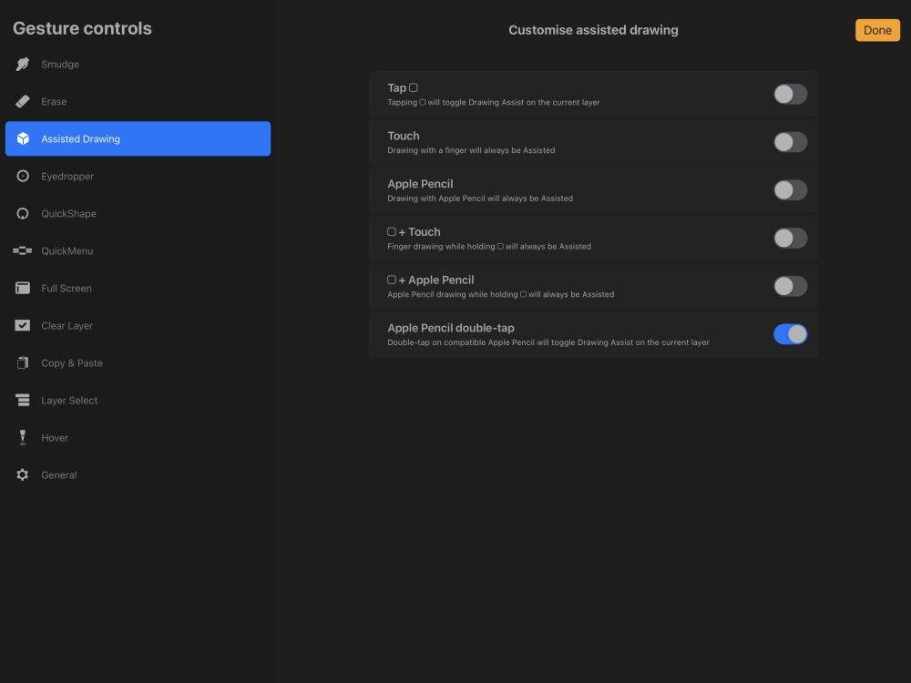
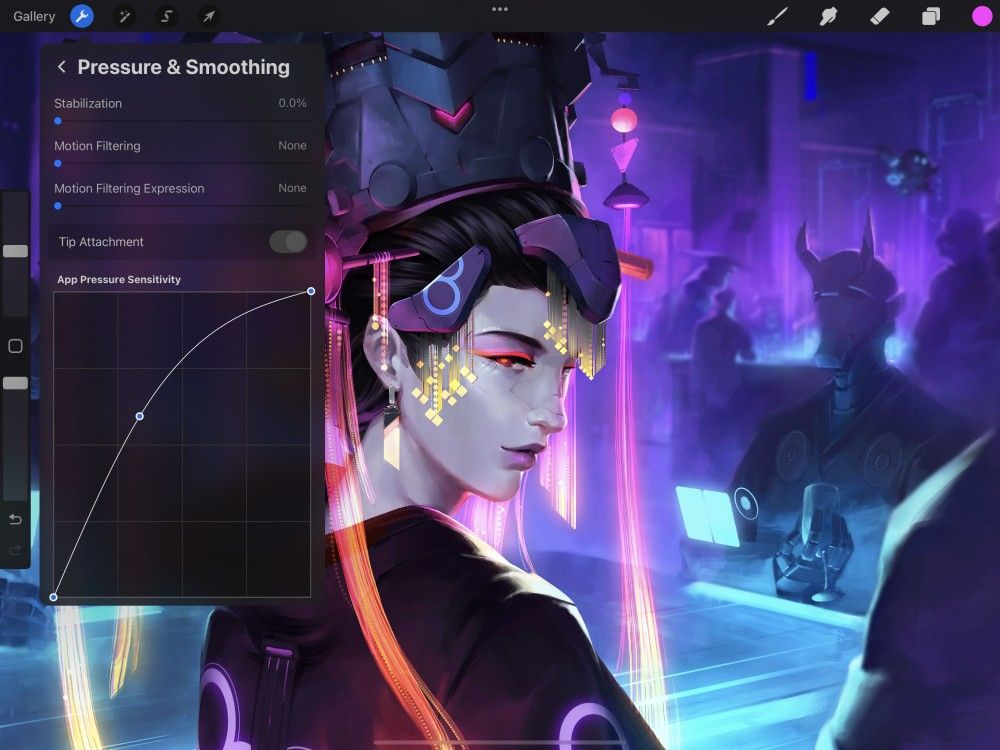
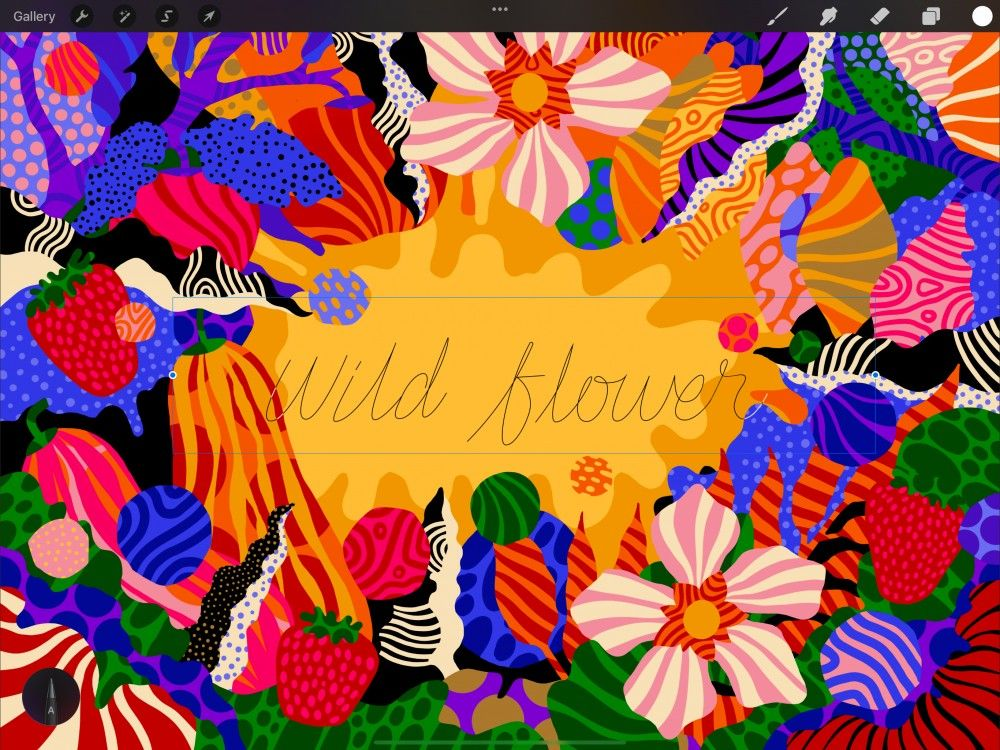
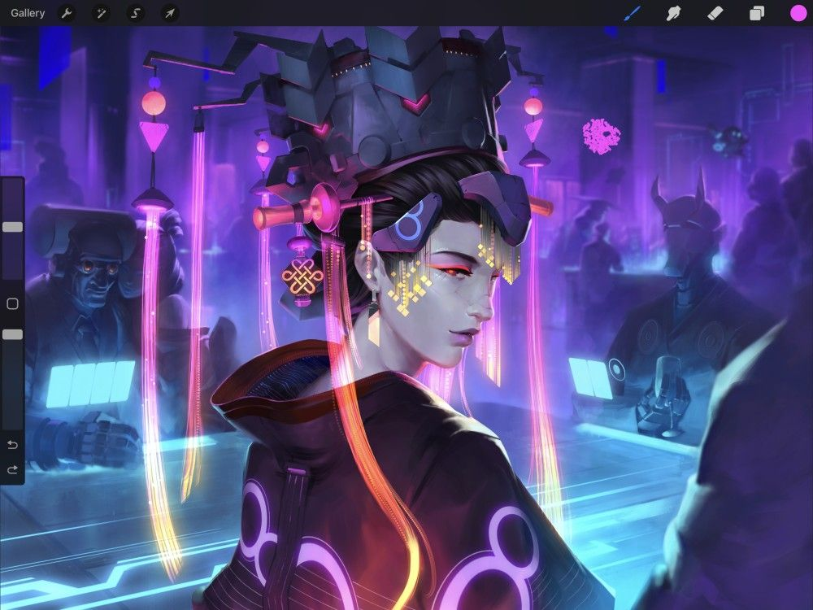

📖 Đã dịch sang tiếng Việt. Thuật ngữ chuyên môn giữ tiếng Anh — rê chuột để xem nghĩa (tooltip).
Apple Pencil
Unlock Procreate's full potential with the sensitivity, speed, and precision of Apple Pencil.
Sử dụng Apple Pencil
Khám phá các Brushes (cọ) linh hoạt phản hồi với áp lực, độ nghiêng và độ xoay của Apple Pencil.


Setup
Cứ vẽ thôi.
Bạn không cần kết nối Apple Pencil với Procreate. Ngay khi đã ghép nối nó với iPad, mở Procreate và bắt đầu vẽ ngay.
Các cọ được tối ưu của Procreate hoạt động tự nhiên với áp lực và độ nghiêng của Apple Pencil, cũng như squeeze (vỗ nắn) và barrel roll (xoay thân) của Apple Pencil Pro. Dù bạn có thể tùy chỉnh rất nhiều kiểu phản hồi cọ với Apple Pencil ở mức độ rất lớn, bạn cũng có thể dùng chúng ngay nguyên trạng.

Thuộc tính
Apple Pencil ghi nhận những thay đổi cực nhỏ về áp lực và độ nghiêng. Apple Pencil Pro bổ sung cử chỉ squeeze và xoay với barrel roll.
Phản hồi này ảnh hưởng đến cách cọ Procreate phản hồi. Ví dụ, bạn có thể gắn kích thước cọ với áp lực Apple Pencil, nên khi bạn nhấn mạnh hơn sẽ ra nét vẽ dày hơn. Hoặc gắn độ nghiêng cọ với độ đục: bạn có được một nét đặc khi cầm cọ thẳng đứng, nhưng nét đó nhạt dần khi bạn nghiêng bút. Và bạn có thể đi xa hơn nữa: gắn sự phân tán với độ nghiêng hoặc đổi màu với áp lực. Bạn thậm chí có thể chuyển đổi qua lại giữa hai chất liệu cọ khác nhau tùy theo đầu vào từ Apple Pencil. Nếu có Apple Pencil Pro, bạn có thể gắn barrel roll với sắc độ, hình dáng, v.v.
Cọ Procreate và Apple Pencil có thể kết hợp để tạo ra các hiệu quả hoàn toàn độc đáo, với hàng trăm cài đặt tùy chỉnh đều dưới sự kiểm soát của bạn.
Khám phá Brush Studio Settings để tìm hiểu tất cả cách Apple Pencil và cọ Procreate có thể tương tác.

Lối tắt Chạm hai lần
Chạm hai lần vào thân Apple Pencil thế hệ 2 để chuyển công cụ hoặc gọi tính năng yêu thích.
Lối tắt tùy chỉnh này đặt chức năng yêu thích của bạn trong tầm tay. Thay đổi lối tắt mặc định trong phần Apple Pencil của iOS Settings. Hoặc chọn một tùy chỉnh trong Gesture Controls của Procreate.
Trong iOS Settings, các lối tắt có sẵn là:
- Switch Between Current Tool and Eraser (chuyển giữa công cụ hiện tại và tẩy, mặc định)
- Switch Between Current Tool and Last Used (chuyển giữa công cụ hiện tại và công cụ dùng gần nhất)
- Show Color Palette (hiện bảng màu)
Off
Trong Gesture Controls của Procreate, các lối tắt có sẵn là:
- Toggle Drawing Assist (bật/tắt trợ giúp vẽ)
- Invoke Eyedropper (gọi ống hút màu)
- Trigger QuickShape (kích hoạt QuickShape)
- Invoke QuickMenu (gọi QuickMenu)
- Toggle Full Screen (bật/tắt toàn màn hình)
- Clear Layer (xóa layer)
- Invoke Copy Paste menu (gọi menu Copy Paste)
Để tắt tính năng này, chạm Off trong iOS Settings.

Độ nhạy Áp lực Ứng dụng
Điều chỉnh phản hồi áp lực của Apple Pencil cho phù hợp với cách bạn vẽ.
Apple Pencil có dải động rất lớn. Điều này có nghĩa là bạn phải nhấn rất mạnh mới đạt 100% áp lực hoặc độ đục. Nếu bạn vẽ với tay nhẹ hơn, có thể bạn không tận dụng được toàn bộ dải nhạy của Pencil với cài đặt mặc định.
Dùng đường cong App Pressure Sensitivity tùy chỉnh của Procreate để điều chỉnh cảm giác của Pencil hoặc bút cảm ứng. Việc này sẽ giúp bạn khai thác tối đa Apple Pencil.
Tìm hiểu cách điều chỉnh App Pressure Sensitivity.
Scribble
Procreate đã tích hợp Scribble để dùng với Apple Pencil.

iPadOS 14 giới thiệu khả năng dùng Scribble với Apple Pencil, được tích hợp đầy đủ vào Procreate.
Giờ bạn có thể dùng Apple Pencil để viết trong bất kỳ trường chữ hoặc số nào nơi bạn có thể nhập thông tin. Việc này bao gồm đặt tên Layers (lớp), nhập phần trăm và số trong Brush Studio, hoặc nhập chữ trong Add Text (thêm chữ).
Mọi cử chỉ có sẵn trong Scribble đều áp dụng trong Procreate. Bao gồm khoanh tròn để chọn, gạch xóa để xóa, v.v.
Để dùng Scribble, bạn cần iPadOS 14 trở lên và dùng Apple Pencil.
Pro Tip
Use Scribble to speed up your workflow by avoiding having to invoke the keyboard.
Hover
Procreate đã tích hợp hỗ trợ hover của Apple Pencil.

Với hover, con trỏ cọ hiển thị khi bạn di chuyển đầu Apple Pencil ngay trên khung vẽ. Khi bật, con trỏ sẽ hiện xem trước kích thước, hình dáng, chất liệu của cọ, và cả độ nghiêng và góc phương vị.
Con trỏ cọ với hover sẽ hoạt động trên Paint, Smudge và Erase, cho phép xem trước kết quả trước khi dùng cọ.
Tích hợp hover còn đi kèm các điều khiển cử chỉ độc đáo để điều chỉnh kích thước cọ và độ đục. Tìm hiểu thêm về các điều khiển này trong phần Gestures của Interface and Gestures trong Cẩm nang này.
Heads Up
Hover requires iPadOS 16.1 or newer running on iPad Pro 12.9-in. (6th generation) or iPad Pro 11-in. (4th generation) or later while using Apple Pencil 2nd generation or Apple Pencil Pro.
Squeeze (cần Apple Pencil Pro)
Squeeze trên Apple Pencil Pro có thể dùng để chuyển đổi giữa các công cụ, điều khiển QuickShape, truy cập các tính năng như Eyedropper và Layer select, hoặc gọi nhanh các menu.
Trong Procreate, chạm Actions (hành động) → Prefs (tùy chỉnh) → Gesture Controls (điều khiển cử chỉ). Các lối tắt có sẵn cho squeeze với Apple Pencil Pro là:
- Trigger QuickShape (kích hoạt QuickShape)
- Invoke QuickMenu (gọi QuickMenu)
- Trigger Layer Select (kích hoạt chọn layer)
- Trigger Eyedropper (kích hoạt ống hút màu)
Nếu tất cả cử chỉ squeeze đều tắt trong Procreate, squeeze sẽ mặc định theo cài đặt iPadOS.
- Show Tool Palette sẽ gọi QuickMenu
- Switch between Current Tool and Eraser sẽ chuyển đổi giữa erase và paint hoặc smudge
- Switch between Current Tool and Last Used sẽ chuyển đổi giữa hai công cụ dùng gần nhất: paint, smudge hoặc erase
- Show Color Palette sẽ gọi Color Panel (bảng màu)
- Show Ink Attributes sẽ gọi menu Brush Library (thư viện cọ)
Để tắt hoàn toàn squeeze, chạm Off trong Settings iPadOS.
Barrel roll (cần Apple Pencil Pro)
Với barrel roll và Apple Pencil Pro, bạn có một cách hoàn toàn mới để điều khiển hành vi cọ trong cài đặt Brush Studio.
Bạn có thể đặt barrel roll để điều khiển một hoặc nhiều thuộc tính sau: hướng hình dáng, màu và tương tác màu, và kích thước. Chạm một cọ đã chọn để mở Brush Studio rồi chạm một trong các thuộc tính này:
- Stroke path (đường nét) → Jitter (rung)
- Shape (hình dáng) → Input style (kiểu đầu vào).
- Wet Mix (trộn ướt) → Attack (tấn công).
- Color dynamics (động lực màu) → Color barrel roll.
- Apple Pencil → Barrel roll.
Đọc thêm trong phần Brush Studio của Cẩm nang.
Bạn cũng có thể dùng Apple Pencil Pro với các tính năng twirl left (xoáy trái) và twirl right (xoáy phải) của công cụ Liquify. Để bật, chạm Actions (hành động) → Prefs (tùy chỉnh) → Gestures controls (điều khiển cử chỉ) → General (chung) và bật Rotate Liquify with Apple Pencil Pro.
Still have questions?
If you didn't find what you're looking for, explore our video resources on YouTube or contact us directly. We’re always happy to help.